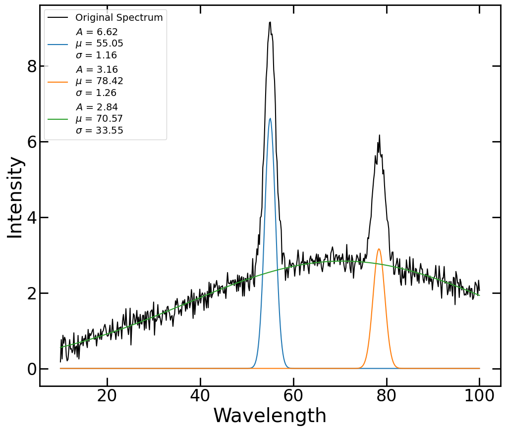
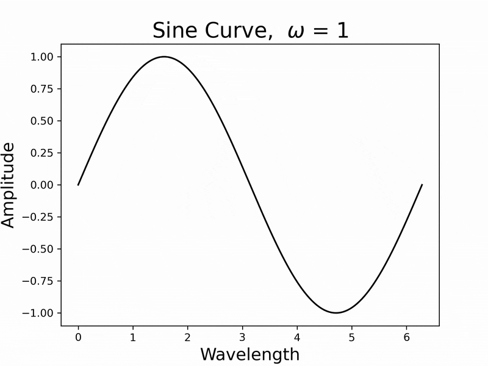

Python Tutorials
Below are Jupyter notebooks presented at University of Toledo Physics & Astronomy Python workshops between 2023-2025. In addition to direct download links for the notebooks, Binder links have been provided that open the notebooks in an executable environment accessible through your internet browser.

Example of how to use scipy.curve_fit to fit a custom model to data.
Easy method to format plots at the beginning of your code.
Demo for using interactive sliders in Jupyter notebooks.
Curve Fitting with SciPy


A quick example showing how to create an animation in Python from saved figures.
Animations with Python